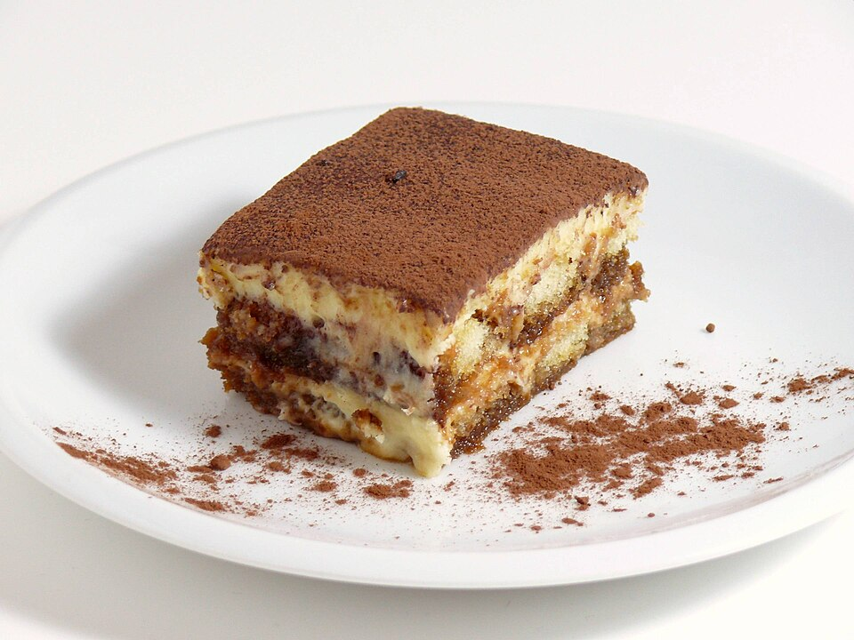

Tiramisu
This is a recipe for Tiramisu.
Tiramisu is an Italian dessert made with coffee-soaked ladyfingers (savoiardi) covered with a cream of egg yolks, sugar, mascarpone, and cocoa powder.
It originated in northeastern Italy, and modern versions were popularized in restaurants from the late 1960s. Tiramisu has become one of the most internationally recognised Italian desserts and has inspired many variations in home and professional cooking.
The name comes from the Italian tirami-su, meaning "pick me up" or "cheer me up".
The original tiramisu served at Le Beccherie was round. Modern versions are often made in a rectangular or square pan, making it easier to arrange the biscuits.
A common variation is to add alcohol to the coffee that the savoiardi are soaked in. Common choices include coffee-flavoured liqueurs such as Tia Maria and Kahlúa, Marsala wine, amaretto, dark rum, Madeira, port, brandy, Malibu or Irish cream.
List Of Ingredients
- 6 egg yolks
- 1 1/4 cups of sugar
- 1 1/4 cups of mascarpone
- 1 3/4 cups of heavy whipping cream
- 340 grams of ladyfingers
- 1/3 cup coffee flavoured liqueur
- 30 grams of chocolate
- 1 teaspoon of Cocoa powder for decorative purposes
Instructions to Make your own Tiramisu
- In a large bowl, whisk together the egg yolks and sugar until thick and pale. This will take about 5 minutes.
- Add the mascarpone to the egg yolk mixture and mix until smooth.
- In a separate bowl, whip the heavy cream until stiff peaks form. Gently fold the whipped cream into the mascarpone mixture until well combined.
- In a shallow dish, combine the coffee flavoured liqueur with a little bit of water to dilute it. Dip each ladyfinger into the coffee mixture for about 1-2 seconds, making sure not to soak them too much.
- Arrange a layer of soaked ladyfingers in the bottom of your serving dish. Spread half of the mascarpone mixture over the ladyfingers. Repeat with another layer of soaked ladyfingers and the remaining mascarpone mixture.
- Cover and refrigerate for at least 4 hours, or overnight, to allow the flavors to meld together.
- Before serving, dust the top with cocoa powder and sprinkle with grated chocolate for decoration.
>
Back to the main page here